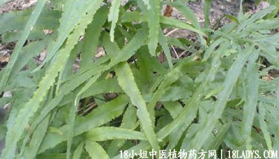

(本文解释权归中药材天地网兄弟站-18小姐中医植物药方网所有,如需转载请注明出处)
井栏荽(中药材植物名:剑叶凤尾蕨)(植物科目:凤尾蕨科)

别名：细叶凤尾草、井栏草。
植物名：剑叶凤尾蕨。
生长环境：本品为草本，长于溪边阴处或树林下湿地，喜生于呈发性土埌上，村庄附近则多见于石砌、水井的井壁上或屋后水沟上。
分布：华南地区和热带亚洲；广东各地皆可找到。
入药部分：全草。
采集期：全年。
自采地点：荒地、井口边。
性味：性凉、味淡。
功能：清热、利水、祛湿。
主治、用量和用法：1、癍痧发热，配伍用；2、痄腮：干用1～2两，清水煎服；3、痢疾：用法同上；4、小便刺痛：用法同上。
验方1（治癍痧发热方）：井栏荽、海金沙藤、金盏银盘、狗肝菜各5钱、清水三碗，煎成一碗服。
（方解）金盏银盘解表兼清里热，以狗肝菜助其凉性，入肝肺三经，井栏荽入大小肠以去湿热，海金沙、车前草利膀胱引热邪从小便而解。合为发表、清里、利湿，治癍痧热症之剂。
（方歌）癍痧大热有奇方，海金沙藤与狗肝，金盏银盘车前草，热从尿解病能医。
验方2（治痢疾方）：井栏荽1两、火炭母1两、羊蹄草1两、清水四碗，煎成一碗服。
（方解）井栏荽清大肠湿热兼利尿，火炭母清肠胃湿热，羊蹄草去湿解热毒。三味俱治痢，而各具其长。合而成方，益增疗效。
（方歌）大肠湿热滞下频，井栏荽与羊蹄群，建堂加入火炭母，清肠解毒显奇能。
参考资料：《本草推陈》成分：含有“酉柔 ”质。效用：为止血止痢疾药，适用于泄泻、痢疾、肠出血、小便尿血、痔疮出血等症。用法：每日3～6两作煎服剂。临床经验：福州市传染病院用本品治菌痢80例，治愈率为100%，平均退热日期为1.6天。腹痛、里急后重等症状消失，平均为23天。大便成形，平均为4天。大便培养细菌转阴性为3.7天（全国医药卫生技术革命展览资料）。
《广东中医》（1959.7）南海县中医院报导：采用本药治疗肠伤寒5例，得较好的结果。该药疗效高，药价便宜，其中一例治愈出院，只需药费二元八角。
《广东中医》（1958.9） 井栏荽治急性扁桃体腺炎5例，患者4～5天治愈。
《中华儿科杂志》（1960.3）上海广慈医院报导：剑叶风尾草，别名为白鸡脚（井栏荽），治疗细菌性痢疾，用温州草药白鸡脚治疗85例，治愈率达57%，成人更好，达93%,日用量一般1两至1两半，剂量较大，效果更高。一次服比多次疗效高，加用灌肠不能增加疗效。对抗药菌株有46.6%治疗率。试管内白鸡脚敏感试验结果不能完全符合临床上治疗效果。毒性副作用极小，使用安全。
广东韶关卫生协会报导：以井栏荽1两，擂烂取汁，加入梅片5分，调冷开水涂治烫伤，一日涂5～7次，连用一周，结痂全愈，不留疤痕。
《广东中医锦方选集节一集》钦县卫生防疫站介绍：凤尾草6两、石榴叶2两、火炭仁7钱（破外壳），加水4碗煎成3碗，加蜜，于6小时内分3次服完，治疗74例痢疾，其一天愈者20例，二天愈者17例，三天愈者37例。
《广州常用草药验方集解》防痢疾方：井栏荽、簕苋菜头、羊蹄草、火炭母，上药各1两，用水4碗煎成1碗，作1次服。
（方解）痢疾多由饮食生冷酸辣燥热，或感受风寒暑湿热，引起大肠湿热而成。本方有止痢、去湿、清大肠热作用，为防止痢疾之有效方剂。
（方歌）大肠秽浊频频，君以栏荽炭母臣，簕苋菜头清湿热，加入羊蹄草作美。
(本文解释权归中药材天地网兄弟站-18小姐中医植物药方网所有,如需转载请注明出处)